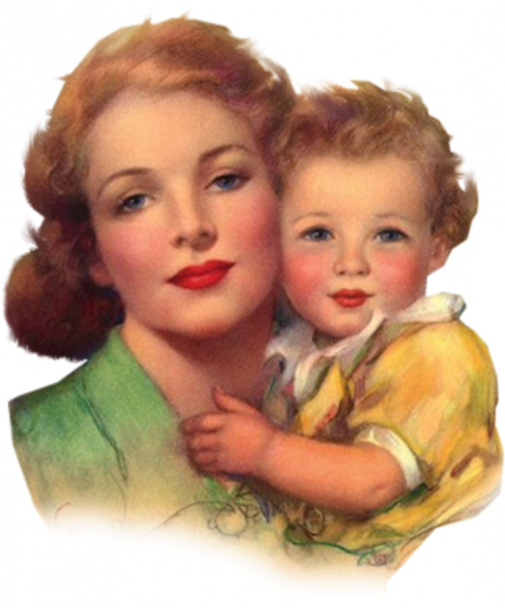

В традициях русской православной культуры первое место всегда занимала семья. В ней скреплялись и вырастали поколения русского народа. Ею принято было гордиться, на нее - надеяться. Да и вся жизнь русского человека была наполнена семейной жизнью, освященной церковным браком. Семья лежала в основе удивительной богатой добрыми традициями русской цивилизации.
Значимость матери в воспитании детей отражается во многих пословицах и поговорках

Дети — благодать Божья;
Дети, что цветы: уход любят
Дети — цветы жизни!
Полна хата детей, так и счастливо в ней.
Особая роль отводилась воспитанию и обучению детей. Говорилось о воспитании детей:
«Народила, да не научила»;
«Умел дитя родить, умей и научить».